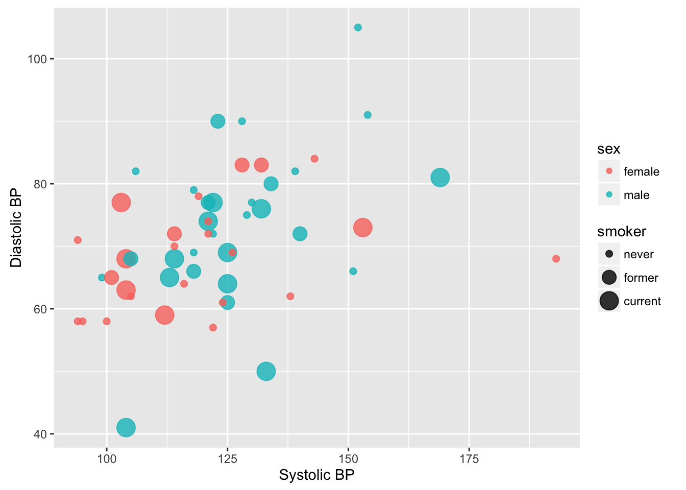
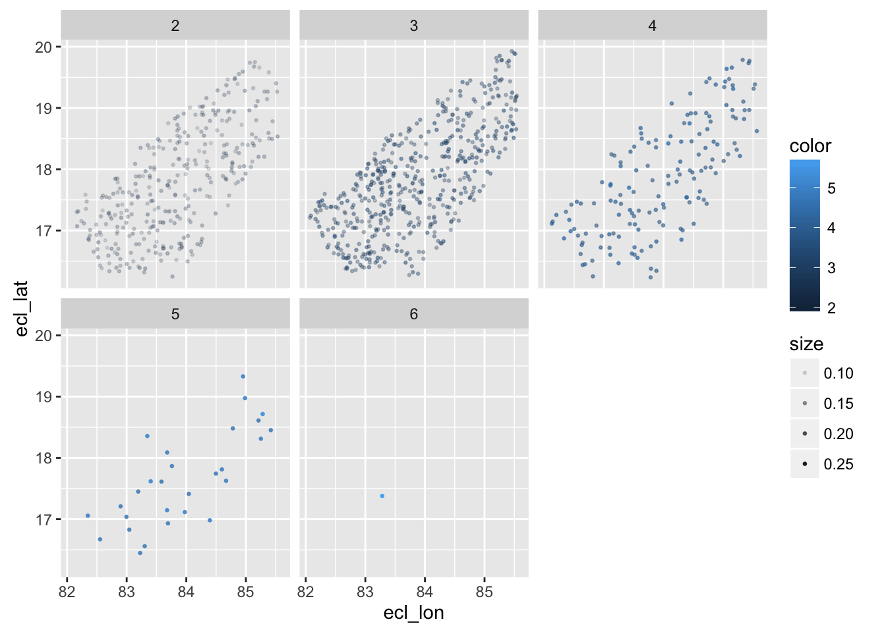
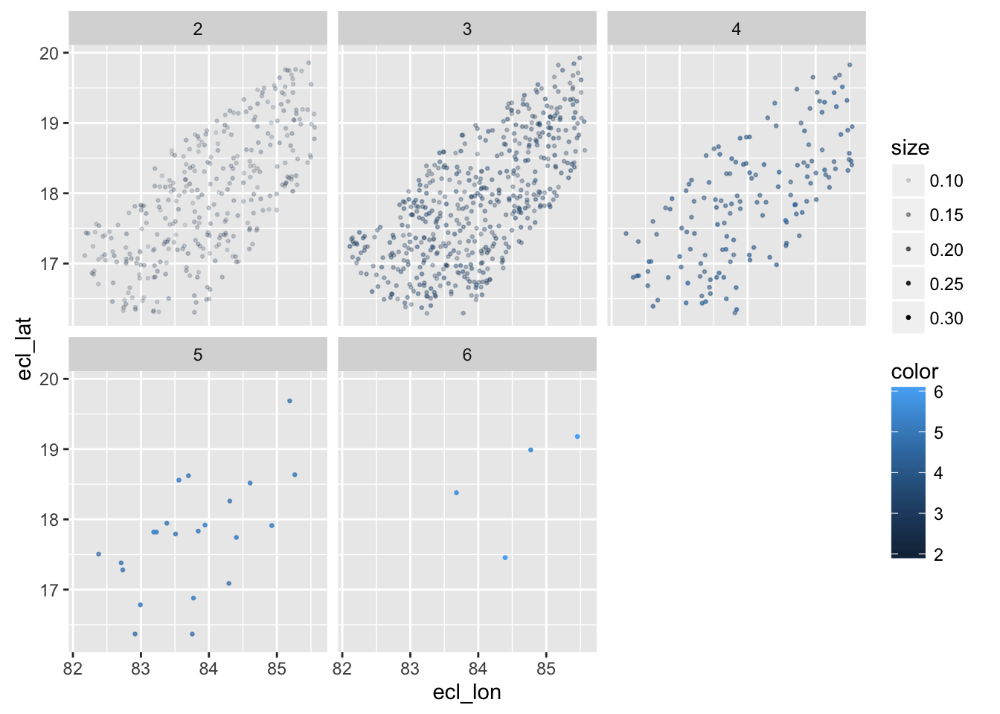
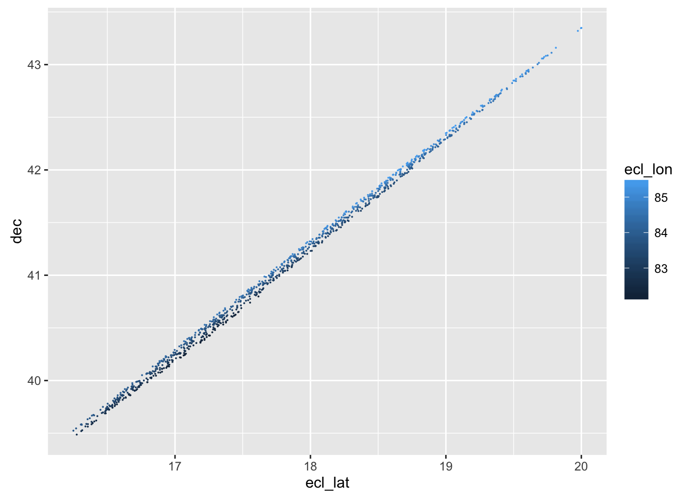
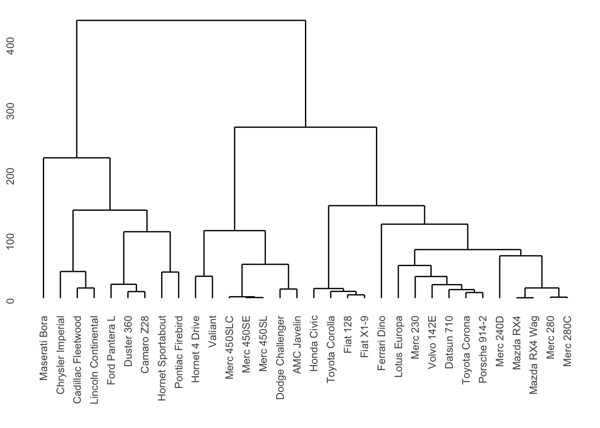

§ 49 Machine Learning
We have spent most of our time on two subjects:
- Data visualization
- Data wrangling: getting from the data you are given to the “glyph-ready” data that you need to make a graphic or some other mode to guide interpretation of the data.
Visualization works well with 1-3 variables, and in some situations can work with more variables.
49.1 A multivariable graphic
 Glyph:
Glyph: geom_path() or “Sankey”, Annotations: rivers and towns
{kind=link}
What variables are being graphed here? Which variable is mapped to which aesthetic?
library(HistData)
data(Minard.troops)
data(Minard.cities)library(ggmap)
background <- get_map(location = "Minsk", zoom = 5) #c(20, 45, 40, 65))
ggmap(background) +
geom_path(data = Minard.troops, alpha = 0.5,
aes(x = long, y = lat -.8, size = survivors, colour = direction, group = group),
linejoin = "bevel", linemitre = 20, lineend = "round") +
xlim(24, 38) + ylim(53,57) + coord_fixed(ratio = 2) +
geom_text(aes(x = long, y = lat-.8, label = city), size = 3, data = Minard.cities)## Warning: Removed 1 rows containing missing values (geom_rect).
49.2 With more variables?
If we need to relate more variables, a visualization may not suffice.
49.3 Various goals for machine learning
- Make predictions
- Anticipate the effect of an intervention
- Explore masses of data
49.4 Supervised vs unsupervised learning
- Supervised: There is an outcome that you have recorded in your data.
- Unsupervised: No outcome variable.
- in-class activity on gene expresion
- example about Scottish Parliament in book
49.5 Supervised learning
We construct a mathematical model of the situation.
- Configure the model with adjustment knobs. These are called “parameters.”
- Twiddle with the knobs until the model makes a good match to the data.
knitr::include_graphics("https://seamlessblog.files.wordpress.com/2013/06/mannequin-collage1.jpg")
In the dressmaker’s dummy, adjustment knobs for matching the model to measurements of waist, hips, height, etc.
In machine learning, we adopt a mathematical form with parameters.
Example 1: Straight-line models \(f(x) = m x + b\). The input is \(x\), the parameters are \(m\) and \(b\).
ggplot(SaratogaHouses, aes(y = price, x = livingArea)) + geom_point(alpha = 0.3) + stat_smooth(method = "lm", se = FALSE)
coef(lm(price ~ livingArea, data = SaratogaHouses))## (Intercept) livingArea ## 13439.3940 113.1225Example 2: Trees with branches At each branch point, the level of the variable to split on.
model <- rpart(time ~ year, data = SwimRecords) prp(model)
These simple functions with just one input variable can be made more elaborate, e.g.
- Trees
- Can choose which variable to split on at each break
- Can randomize choice, make lots of trees, and average
swim_model <- randomForest(time ~ year + sex, data = SwimRecords) fmodel(swim_model)## Warning in fmodel(swim_model): No intervals available for model ## typerandomForest.formularandomForest
Straight-lines become low-order polynomials: \(f(w, x, y, z) = a + bw + cx + dy + ez\)
house_price_model <- lm(log(price) ~ log(livingArea) * bathrooms * newConstruction + pctCollege, data = SaratogaHouses) fmodel(house_price_model, post_transform = c(price = exp) )
- Statistical question: Should we take these detected patterns seriously?
fmodel(house_price_model, post_transform = c(price = exp), intervals = "confidence")
- So why are the results so uncertain for new construction?
- not much data
- new houses are not built with one bathroom
SaratogaHouses %>% ggplot(aes(x = bathrooms, fill = newConstruction)) + geom_bar(position = "dodge")
49.6 Application Examples
49.6.1 Home electricity use
How to visualize the relationship between thermsPerDay, temp and kwh
Utilities <- read.csv("http://tiny.cc/dcf/utilities-up-to-date.csv",
stringsAsFactors = FALSE)
library(splines)
model <- lm(thermsPerDay ~ ns(temp, 5) + ns(temp,3) : kwh, data = Utilities)
fmodel(model, intervals = "confidence")
Interpreting this model: In colder temperatures, higher electricity use leads to lower natural gas usage.
49.6.2 Wages and education
How does wage depend on sex? Take into account education and age and sector
forest_mod <- randomForest(wage ~ educ + sex + age, data = CPS85)
fmodel(forest_mod, age = c(25, 40))## Warning in fmodel(forest_mod, age = c(25, 40)): No intervals available for
## model typerandomForest.formularandomForest
49.7 Statistical learning
- honest assessment of differences
- honest comparison of models
- measure “complexity” or “flexibility” of models
- bias/variance trade-off
- covariates and causal reasoning
49.8 Example: Child carseat sales
Purpose: Figure out how to raise sales of a brand of carseats.
head(ISLR::Carseats %>% rename(CompP=CompPrice,Ads=Advertising, Pop=Population, Shelf=ShelveLoc, Edu=Education))## Sales CompP Income Ads Pop Price Shelf Age Edu Urban US
## 1 9.50 138 73 11 276 120 Bad 42 17 Yes Yes
## 2 11.22 111 48 16 260 83 Good 65 10 Yes Yes
## 3 10.06 113 35 10 269 80 Medium 59 12 Yes Yes
## 4 7.40 117 100 4 466 97 Medium 55 14 Yes Yes
## 5 4.15 141 64 3 340 128 Bad 38 13 Yes No
## 6 10.81 124 113 13 501 72 Bad 78 16 No Yes49.9 Hypothesis generated model
- Price relative to competitor’s price is relevant.
- Larger population gives larger sales
- Education level?
- Advertising?
Carseats <-
ISLR::Carseats %>%
mutate(rel_price = Price / CompPrice)
mod1 <-
Carseats %>%
lm(Sales ~ rel_price + Population + Education + Advertising,
data = .)
coef(mod1)## (Intercept) rel_price Population Education Advertising
## 17.497352098 -10.907759402 -0.000139262 -0.055051345 0.13691176049.10 Interpreting the model?
summary(mod1)##
## Call:
## lm(formula = Sales ~ rel_price + Population + Education + Advertising,
## data = .)
##
## Residuals:
## Min 1Q Median 3Q Max
## -6.005 -1.470 -0.118 1.310 5.280
##
## Coefficients:
## Estimate Std. Error t value Pr(>|t|)
## (Intercept) 1.750e+01 8.728e-01 20.048 < 2e-16 ***
## rel_price -1.091e+01 6.673e-01 -16.345 < 2e-16 ***
## Population -1.393e-04 7.470e-04 -0.186 0.852
## Education -5.505e-02 4.051e-02 -1.359 0.175
## Advertising 1.369e-01 1.651e-02 8.294 1.74e-15 ***
## ---
## Signif. codes: 0 '***' 0.001 '**' 0.01 '*' 0.05 '.' 0.1 ' ' 1
##
## Residual standard error: 2.108 on 395 degrees of freedom
## Multiple R-squared: 0.4483, Adjusted R-squared: 0.4427
## F-statistic: 80.25 on 4 and 395 DF, p-value: < 2.2e-1649.11 Another formalism: Regression trees
library(rpart)
mod2 <-
Carseats %>%
rpart(Sales ~ rel_price + Price + CompPrice + Advertising + Population + Education + Income, data=.)
prp(mod2)
49.12 No prior model at all?
mod3 <- Carseats %>% rpart(Sales ~ ., data=.)
prp(mod3)
49.13 Shelf location?
mod4 <- Carseats %>%
rpart(Sales ~ rel_price + Advertising + ShelveLoc + Population, data=.)
prp(mod4)
49.14 Building a classifier
62 variables are derived from a confocal laser scanning image of the optic nerve head, describing its morphology. Observations are from normal and glaucomatous eyes, respectively.
data("GlaucomaM", package = "TH.data")49.14.1 With glaucoma

49.14.2 Normal eyes

49.15 Build a classifier …
glaucoma_rpart <- rpart(Class ~ ., data = GlaucomaM,
control = rpart.control(xval = 100))
prp(glaucoma_rpart, type=4, extra=2)
49.16 Unsupervised learning
Dists <- dist(mtcars)
Dendrogram <- hclust(Dists)
ggdendrogram(Dendrogram)